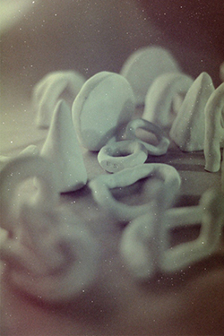

En mi práctica y pensamiento artístico poético de los últimos años hay una pregunta a la cual recurrentemente vuelvo.
En la insistencia de acercarme de algún modo a posibles abordajes
provisorias respuestas o simplemente señalarla:
el tiempo.
Piezas utilitarias realizadas en el 2020
Proyecto en curso. Colaboración con LUN. Inspiradas en karesansui, las piezas invitan a generar un momento, un espacio para realizar una intervención en el espacio, la cual se puede montar y desmontar de multiples maneras. Todo es sujeto de ser movible.
Artista plástica de formación.
Interesada en reflexionar sobre las múltiples aristas del tiempo, através del video y las diversas
técnicas que ofrece la cerámica.
holabritany@gmail.com